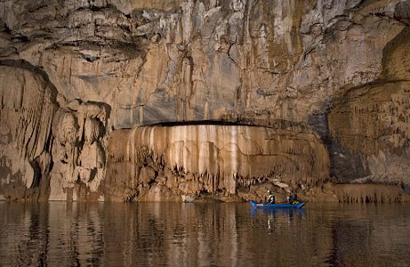

An expedition in February 2008, co-led by veteran caver John Pollack, comprehensively mapped and photographed the 5.9-mile (9.5-kilometer) length of the little-known cavern for the first time.

The explorers encountered some of the largest rooms and most impressive structures of any river cave on Earth, Pollack said.
A river cave is any cave with an active water source flowing through it.
Everything about the cave is big - from its towering entrances to its phobia-inducing spiders, which can be 10 inches (25 centimeters) across, Pollack added.
"It's also extremely well decorated with spectacular formations", Pollack said.